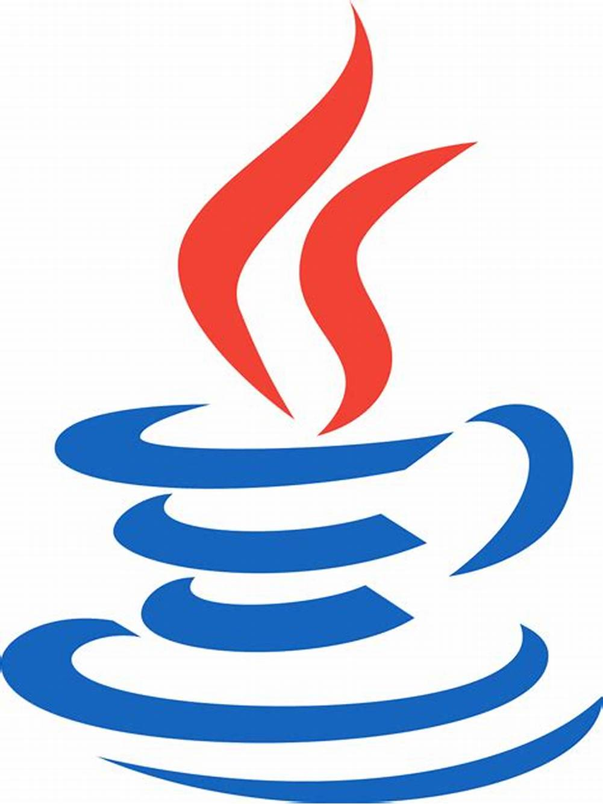

Desenvolvimento de um Jogo com Java.
Na disciplina de POO do IFPR em 2023, foi desenvolvido um jogo no estilo Space Invaders utilizando Java Orientado a Objeto.

Olá! Eu sou o Cauê, estudante de Engenharia de Software e atualmente Analista de Suporte.
Bem vindo ao meu curriculo montado manualmente com HTML e CSS.
Na disciplina de POO do IFPR em 2023, foi desenvolvido um jogo no estilo Space Invaders utilizando Java Orientado a Objeto.

Curso foi apresentado no IFPR em 2022 e teve duração de 76 horas. Nele, foi desenvolvido cursos utilizando Dart no SDK Flutter.

Descrição do curso.
Cursando Engenharia de Software no Instituto Federal o Paraná - campus Paranavaí, de 2022 a 2025.
Completado 2 anos do Childrens course na escola de inglês CCAA, de 2014 a 2016.
(44) 99740-0891
Caueyanagihara@gmail.com